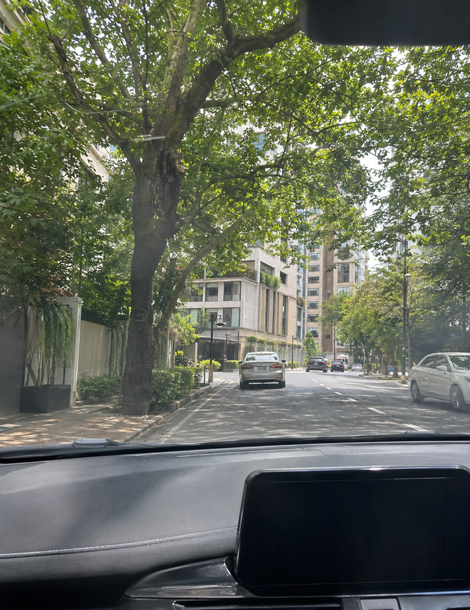
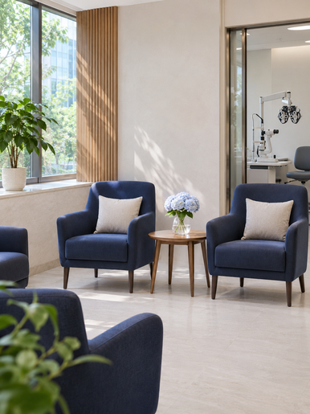
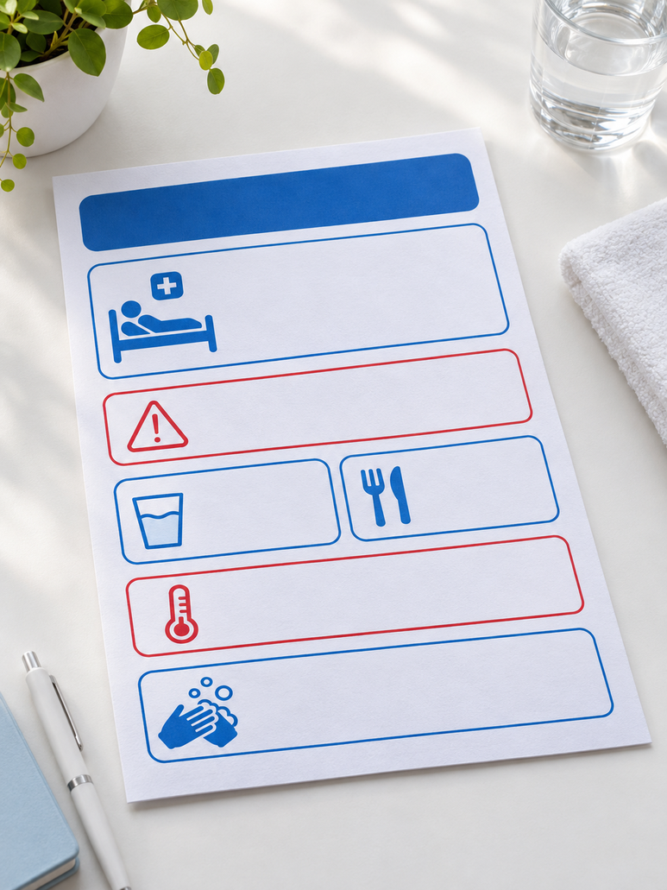
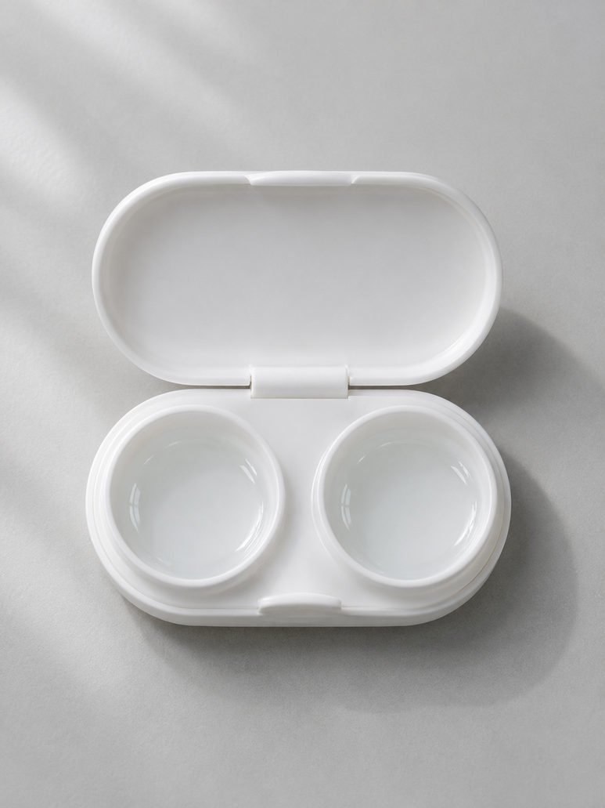
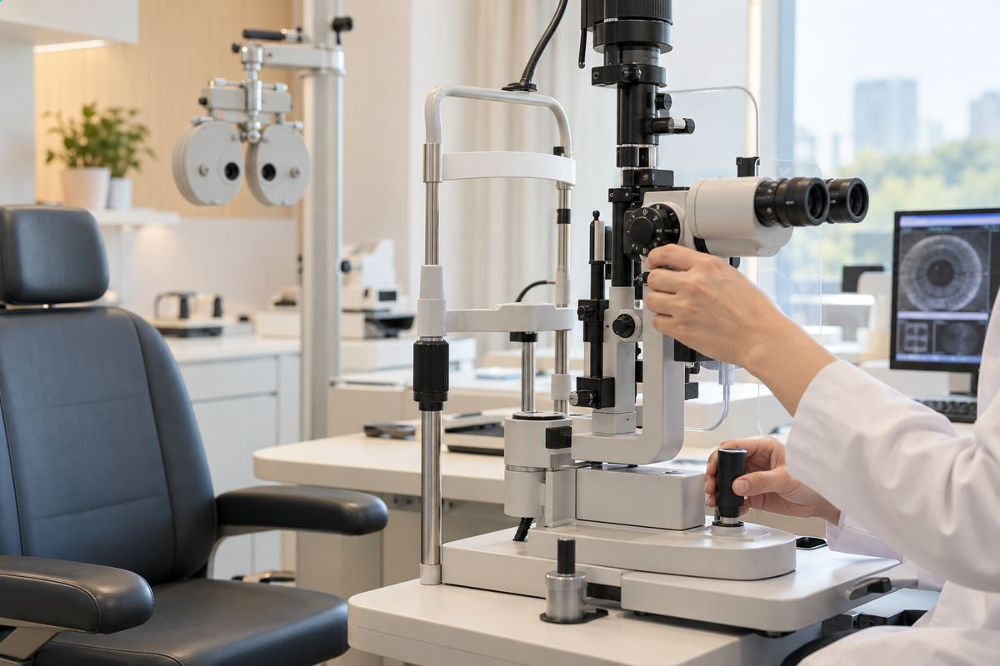
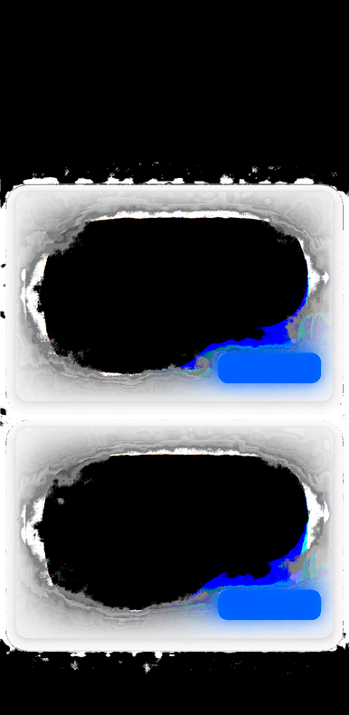
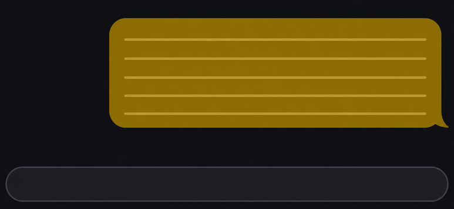
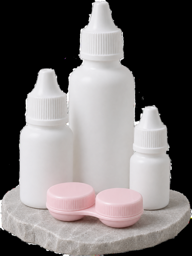

17년 동안 안경을 쓰고 12년 동안 렌즈를 끼다가 스마일 수술을 받았어요.
- 김**
- 수술일 2025.05.02
리뷰 내용
- 교정전
- 교정후
안녕하세욥-!
안경과 렌즈를 번갈아 쓰며 꽤 오래 지냈어요.
진작 알아볼걸 싶었던
제 교정 수술 경험을 차근차근 적어볼게요.
스무 살 무렵부터 가족이 수술을 권했지만 컬러렌즈가 좋아 결정을 계속 미뤘어요.
그러다 한 달쯤 전 가까운 사람이 먼저 수술을 받았고
교정 수술을 받았다는 얘기를 듣고
저도 제 눈 상태를 확인해 보고 수술을 결정했어요.
결정까지는 제 검사 결과와 상담 내용을 꼼꼼히 따져 봤어요.
- 중략 -
지난번에는 동행자로 왔던 곳이라
예전에 동행했던 기억이 나서 한결 편했어요.
대중교통으로 이동해 건물 안으로 들어갔고
안내 표지를 따라 접수 장소를 찾았어요.

수술 당일 준비물은 미리 확인해 두는 게 좋겠더라고요.
직접 운전해 방문한다면
출발 전에 방문 위치와 이동 경로를 다시 확인했어요.
주차 안내를 받고 차를 맡긴 뒤 접수대로 이동했어요.
진료를 마친 뒤 주차 관련 내용을 확인했고
주차 지원 기준은 방문 전에 문의해 보는 편이 정확해요.
돌아갈 때 차량을 찾는 절차도 안내받았어요.
검사

접수 뒤에는 예약 확인과 검사가 순서대로 이어졌어요.
예약 시간에 맞춰 도착해 기다렸고
대기하는 분들이 꽤 있었어요.
제 차례가 되자 이름을 불러 주셔서 검사실로 갔어요.
여러 단계를 차례로 안내받을 수 있었어요.
도착 후 접수하고 기본적인 눈 검사를 시작했어요.
시력과 안압을 확인하고 여러 검사 장비를 옮겨 다니며 필요한 측정을 받았어요.
검사 안내를 차분히 설명해 주셔서
처음엔 긴장했는데 조금씩 마음이 편해졌어요.
이후에도 안내를 들을 때마다 다음 장소로 이동했고
상담과 검사 내용을 듣고 수술 전 준비 절차를 하나씩 마쳤어요.
순서를 따라가니 다음 단계가 조금씩 익숙해졌어요.
개인정보는 빼고 제가 겪은 과정을 남겨 볼게요.
저는 평소 먼 곳을 볼 때 불편함이 컸고
왼쪽 눈의 난시도 함께 확인했어요.
검사 전에는 안내받은 기간 동안 렌즈를 쉬어야 해서
처음으로 며칠간 안경만 쓰고 지냈어요.
익숙하지 않은 안경이 조금 어색했지만
거울을 볼 때마다 낯설어서 혼자 웃기도 했어요 ㅋㅋ
- 중략 -
수술을 받은 날의 기억
상담 때 만난 담당 의료진
이전 방문 때와 같은 분이 상담을 맡아 주셨고
제 검사 결과와 진행 순서를 다시 짚어 주셨어요.
수술 전 준비 과정에서 채혈 안내를 받았고
주사에 익숙한 편인 저도 살짝 긴장했지만
차분하게 진행해 주셔서 한결 편했어요.
준비를 마치고 안내에 따라 수술복으로 갈아입은 뒤
대기 의자에서 눈을 감고 기다리다 보니
여러 생각이 스쳐 지나갔어요.
수술실은 낯선 장비가 보여서 처음엔 조금 압도됐어요.
안내받은 자리에 누워 장비를 바라보며 준비했어요.
실내가 서늘하게 느껴졌어요.
안내받은 대로 한 곳을 바라보려고 집중했어요. 긴장했지만 의료진의 설명에 맞춰 차근차근 진행했습니다.
표시등을 바라보는 동안 시야가 흐려지는 순간이 있었고, 그때가 제일 긴장됐어요.
각막 강화 과정도 한쪽씩 진행하는 동안 안내를 계속 들었어요.
양쪽 과정을 마치고 나니 수술이 끝났어요.
마친 직후에는 조금 흐릿하게 느껴졌지만
생각보다 괜찮다고 여겼어요 ㅋㅋ
시간이 지나면서 눈이 시큰거려서 조용히 쉬고 싶었어요.
🥺
돌아가는 길에는 눈을 감고 있었고
집에 도착해서는 눈을 쉬게 하며 간단히 식사한 다음
한동안 푹 잠들었어요.
다음 날부터 며칠간
눈을 뜨고 나니 주변이 더 환하게 느껴져 신기했어요.

처음에는 조금 헷갈렸던
안약 챙기는 일도
처방 안내를 확인하면서 익숙해졌어요.
안약은 처방받은 사용법을 확인하고 챙겼어요.
첫날에는 안내받은 일정에 맞추려고 알람을 맞춰 뒀고
검진 때 다음 기간의 사용 방법을 다시 안내받았어요.
제가 따로 챙긴 준비물도 있었어요.

처방받은 안약의 사용 간격과 보관 방법을 확인해 그대로 따랐어요.
얼음을 넣은 보온병을 집 안에서도 늘 곁에 두고 지냈어요.
외출할 때도 챙기기 편해서 도움이 됐어요.
이건 조금 사소한 얘기지만
선물 받은 텀블러를 요즘 자주 쓰는데 온도가 오래 유지돼 마음에 들어요.
마음에 들어서 가까운 사람에게도 하나 선물했어요.

첫날 챙겨 온 물건들
작은 파우치에는 안약을 넣어 두고
필요할 때 꺼내 쓰니 편했어요.
간식도 챙겨 먹으며 쉬었어요.
다음 검진을 받으러 갔을 때는 초점이 약간 흐렸지만
렌즈를 낀 듯한 느낌이 들었어요.
무리하지 않으며 일상으로 돌아갈 준비를 했어요.
검진을 받고 의료진과 상태를 확인한 뒤
다음 방문 일정을 안내받고 집으로 돌아왔어요.
며칠 뒤에는
수술 관련 자료도 전달받아 보관했어요.

오른쪽 눈의 검사 결과와
제 경험은 횟수로 비교할 수 있는 일이 아니지만
두 눈의 상태를 각각 살펴본 결과와
제가 궁금했던 설명을 상담에서 들었어요.
제 눈 상태에 대해서도
회복 과정은 개인마다 차이가 있을 수 있다고 설명해 주셨어요.
이 글을 쓰는 시점에는
수술 후 얼마 지나지 않았는데도
세안이나 화면 사용은 안내받은 시점에 맞춰 조심스럽게 했고
화면의 글자가 잘 보여서 조금 안심했어요 🥺

아직 익숙해지는 중이라
안경을 찾으려는 버릇은 한동안 남아 있더라고요.
수술 다음 날 검진
일주일 뒤 확인
한 달 뒤 확인
몇 달 뒤 추가 확인
+

집에 있던 렌즈 관리용품도 살펴보고
남은 렌즈와 케이스는 더는 쓰지 않기로 했어요.
예전 습관을 정리하는 마음으로 하나씩 치웠어요.
정리하고 나니 마음이 가벼워졌어요.
안경은 기념으로 남겨 두었어요.
여기까지가 제 수술 전후 경험이에요.
출처 : 환자 블로그 후기
- 교정전
- 교정후